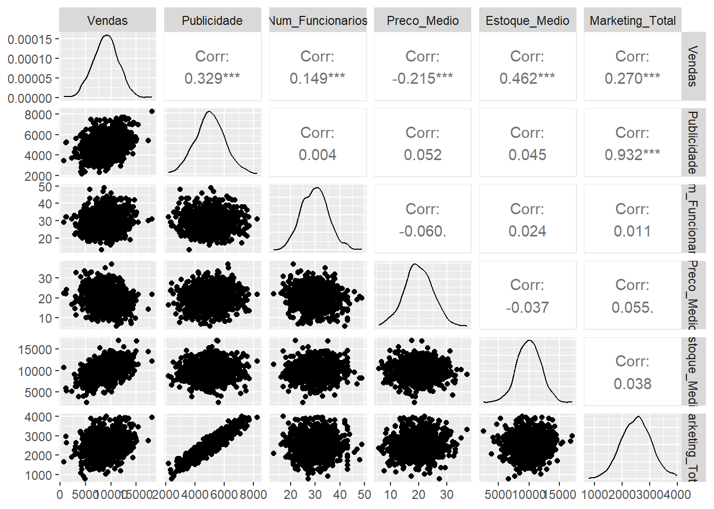
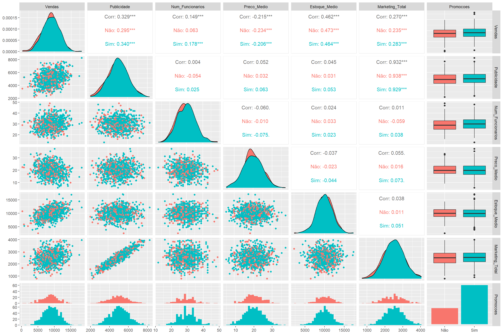
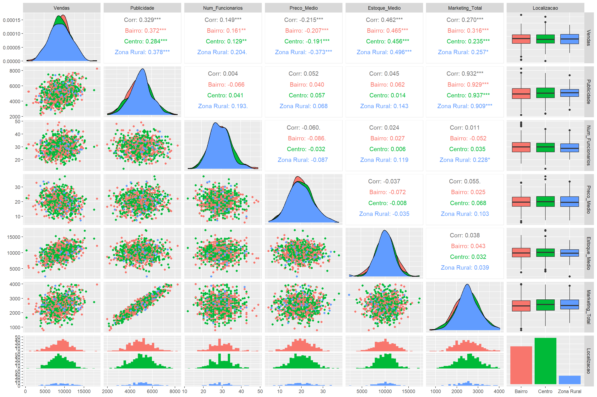
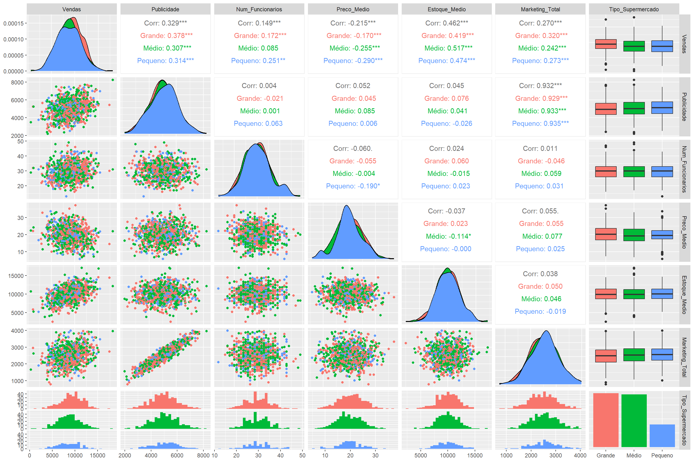
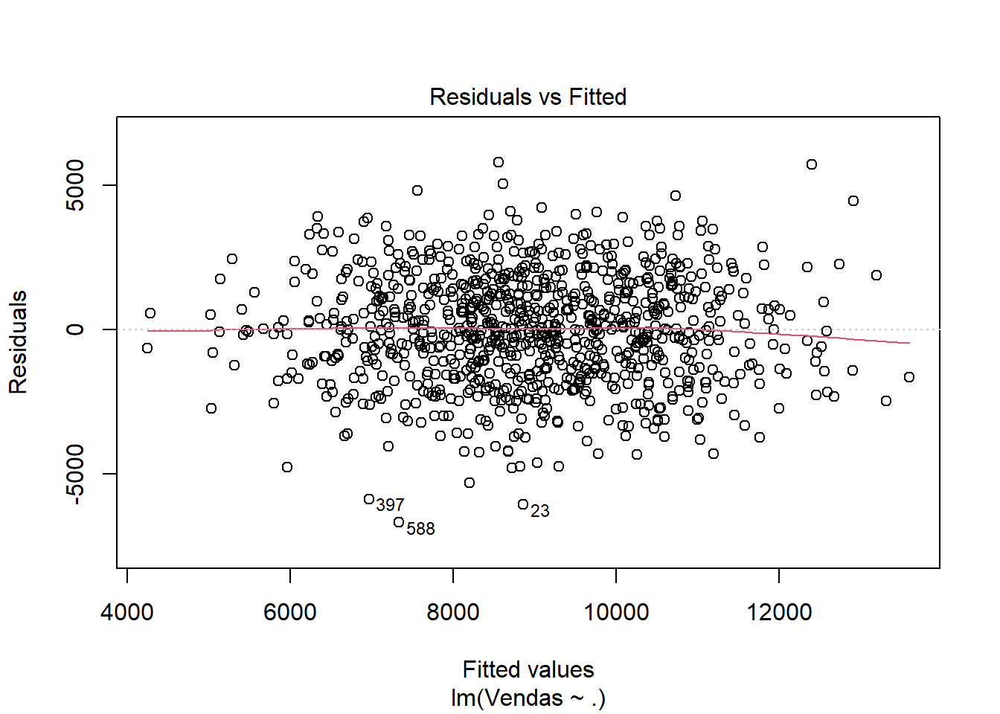
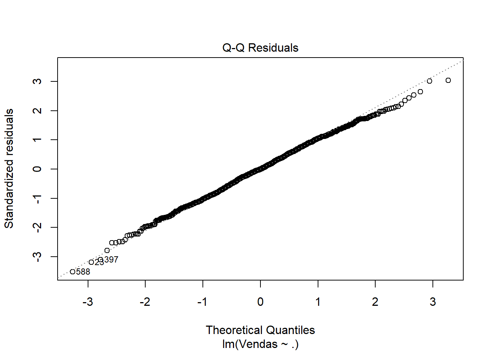
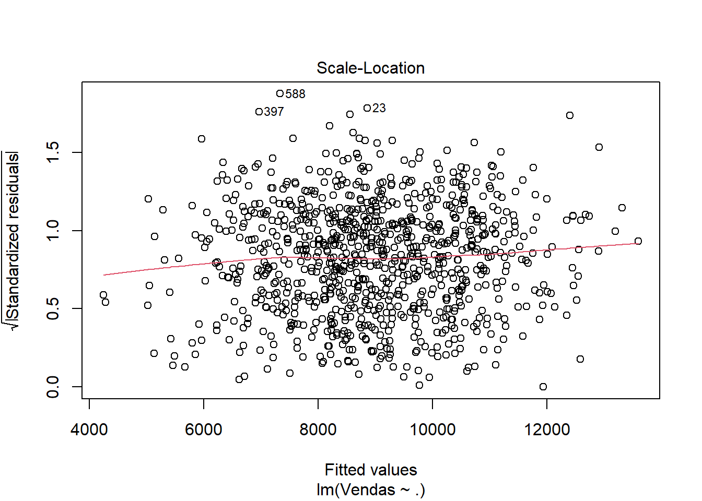
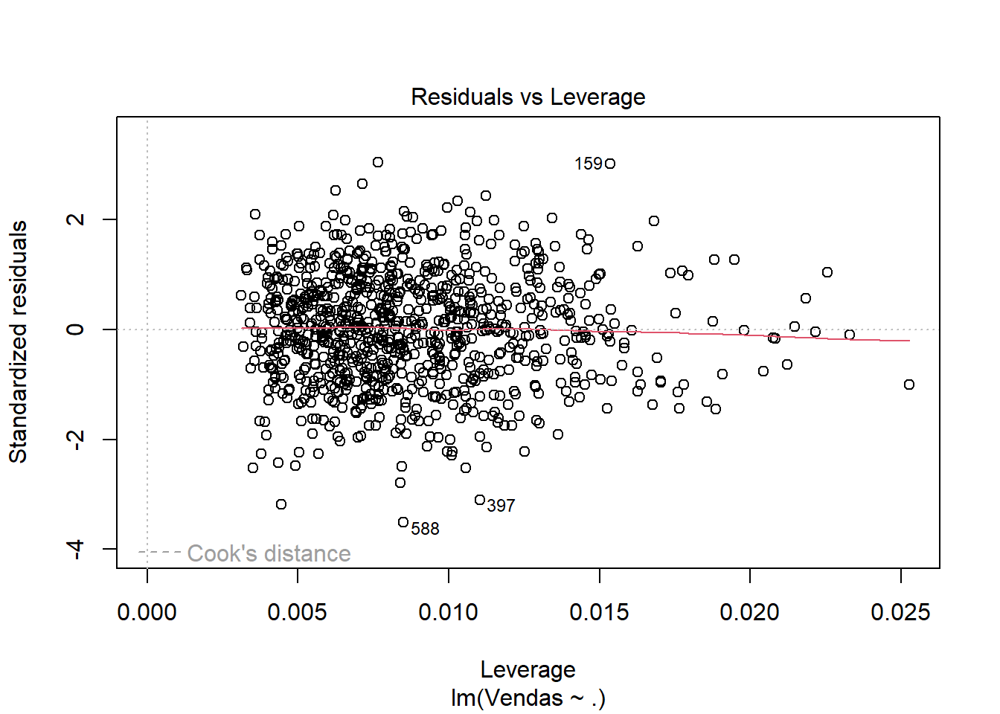

knitr::opts_chunk$set(echo = TRUE, message = FALSE, warning = FALSE)Predição de Vendas de Supermercado
1 Introdução
Por meio deste relatório, pretendemos, realizar uma análise sobre a relação entre diferentes variáveis explicativas e o volume de vendas em supermercados, nossa variável resposta. Tentaremos prever o valor da variável Vendas em nosso banco de dados Vendas Supermercado, com base nas outras variáveis disponíveis, através de um modelo de regressão linear múltipla.
Usaremos nível de significância 10% ao longo desse relatório.
2 O banco de dados
library(readxl)
library(dplyr)
Vendas_supermercado <- read_excel("vendas_supermercado.xlsx")
glimpse(Vendas_supermercado)Rows: 943
Columns: 9
$ Vendas <dbl> 8590.099, 10692.601, 11344.654, 6496.962, 7327.753, …
$ Publicidade <dbl> 4439.524, NA, 6558.708, 5070.508, 5129.288, 6715.065…
$ Num_Funcionarios <dbl> 25, 31, 42, 33, 30, 35, 30, 26, 30, 31, 31, 21, 31, …
$ Preco_Medio <dbl> 19.29743, 22.27903, 14.27214, 18.75175, 17.89851, 20…
$ Promocoes <chr> "Sim", "Sim", "Sim", "Sim", "Sim", "Sim", "Sim", "Si…
$ Localizacao <chr> "Bairro", "Centro", "Bairro", "Bairro", "Bairro", "C…
$ Tipo_Supermercado <chr> "Grande", "Médio", "Médio", "Pequeno", "Grande", "Pe…
$ Estoque_Medio <dbl> 8342.515, 10805.102, 12097.619, 9945.392, 11200.260,…
$ Marketing_Total <dbl> 2005.605, 2570.998, 3639.525, 2429.254, 2372.295, 34…Na base importada, as seguintes variáveis estão registradas:
Vendas_supermercado.Vendas: Quantitativa contínua. Valor bruto em vendas em reais;Vendas_supermercado.Estoque_Medio: Quantitativa contínua. Valor médio total das mercadorias em estoque (em reais) ao longo do tempo;Vendas_supermercado.Publicidade: Quantitativa Continua. Valor gasto em materiais físicos e digitais relacionados à divulgação do supermercado, em reais;Vendas_supermercado.Marketing_Total: Quantitativa Continua. Valor gasto em pessoal para geração de estratégias publicitárias, em reais;Vendas_supermercado.Num_Funcionarios: Quantitativa Discreta. Quantidade de funcionários que trabalham no supermercado;Vendas_supermercado.Preco_Medio: Quantitativa Continua. Valor médio de mercadorias no supermercado, em reais;Vendas_supermercado.Promocoes: Qualitativa Nominal. Se o supermercado realiza promoções (sim ou não);Vendas_supermercado.Localizacao: Qualitativa Nominal. Área do município em que o supermercado está localizado: Bairro, Centro ou Zona Rural;Vendas_supermercado.Tipo_Supermercado: Qualitativa Ordinal. Porte do supermercado: grande, médio ou pequeno.
2.1 Análise Exploratória
library(skimr)
dados <- dados <- Vendas_supermercado %>% select(Vendas, everything())
skim(dados)| Name | dados |
| Number of rows | 943 |
| Number of columns | 9 |
| _______________________ | |
| Column type frequency: | |
| character | 3 |
| numeric | 6 |
| ________________________ | |
| Group variables | None |
Variable type: character
| skim_variable | n_missing | complete_rate | min | max | empty | n_unique | whitespace |
|---|---|---|---|---|---|---|---|
| Promocoes | 0 | 1 | 3 | 3 | 0 | 2 | 0 |
| Localizacao | 0 | 1 | 6 | 10 | 0 | 3 | 0 |
| Tipo_Supermercado | 0 | 1 | 5 | 7 | 0 | 3 | 0 |
Variable type: numeric
| skim_variable | n_missing | complete_rate | mean | sd | p0 | p25 | p50 | p75 | p100 | hist |
|---|---|---|---|---|---|---|---|---|---|---|
| Vendas | 0 | 1.00 | 8992.03 | 2463.00 | 646.84 | 7340.54 | 9072.05 | 10620.75 | 18123.07 | ▁▃▇▂▁ |
| Publicidade | 10 | 0.99 | 5027.31 | 992.06 | 2190.23 | 4388.83 | 5020.98 | 5683.75 | 8241.04 | ▁▅▇▃▁ |
| Num_Funcionarios | 0 | 1.00 | 29.80 | 5.41 | 13.00 | 26.00 | 30.00 | 33.00 | 49.00 | ▁▅▇▃▁ |
| Preco_Medio | 10 | 0.99 | 19.94 | 4.97 | 5.76 | 16.72 | 19.79 | 23.31 | 37.11 | ▁▆▇▃▁ |
| Estoque_Medio | 5 | 0.99 | 10008.80 | 1952.00 | 2529.38 | 8708.73 | 9967.95 | 11352.93 | 17090.92 | ▁▃▇▃▁ |
| Marketing_Total | 0 | 1.00 | 2515.15 | 541.81 | 779.03 | 2145.23 | 2529.74 | 2883.68 | 3990.87 | ▁▃▇▆▁ |
2.1.0.1 Limpeza de dados
A base conta, originalmente, com 943 observações. Dentre as observações, constatamos a ausência de alguns valores (dados NA), as quais serão removidas, a saber:
10 linhas sem dados de publicidade;
10 linhas sem dados de preço médio;
5 linhas sem dados de estoque médio;
Além disso, identificamos que os dados não foram automaticamente lidos como categóricos, assim, convertemos as variáveis qualitativas abaixo.
# Removendo os dados NA
dados <- na.omit(dados)
dados$Promocoes <- as.factor(dados$Promocoes)
dados$Localizacao <- as.factor(dados$Localizacao)
dados$Tipo_Supermercado <- as.factor(dados$Tipo_Supermercado)
skim(dados)| Name | dados |
| Number of rows | 918 |
| Number of columns | 9 |
| _______________________ | |
| Column type frequency: | |
| factor | 3 |
| numeric | 6 |
| ________________________ | |
| Group variables | None |
Variable type: factor
| skim_variable | n_missing | complete_rate | ordered | n_unique | top_counts |
|---|---|---|---|---|---|
| Promocoes | 0 | 1 | FALSE | 2 | Sim: 652, Não: 266 |
| Localizacao | 0 | 1 | FALSE | 3 | Cen: 460, Bai: 375, Zon: 83 |
| Tipo_Supermercado | 0 | 1 | FALSE | 3 | Gra: 383, Méd: 374, Peq: 161 |
Variable type: numeric
| skim_variable | n_missing | complete_rate | mean | sd | p0 | p25 | p50 | p75 | p100 | hist |
|---|---|---|---|---|---|---|---|---|---|---|
| Vendas | 0 | 1 | 8974.93 | 2459.18 | 646.84 | 7329.78 | 9059.82 | 10597.28 | 18123.07 | ▁▃▇▂▁ |
| Publicidade | 0 | 1 | 5024.18 | 993.54 | 2190.23 | 4384.88 | 5009.21 | 5681.12 | 8241.04 | ▁▅▇▃▁ |
| Num_Funcionarios | 0 | 1 | 29.81 | 5.42 | 13.00 | 26.00 | 30.00 | 33.00 | 49.00 | ▁▅▇▃▁ |
| Preco_Medio | 0 | 1 | 19.92 | 4.96 | 5.76 | 16.69 | 19.76 | 23.31 | 37.11 | ▁▆▇▃▁ |
| Estoque_Medio | 0 | 1 | 10000.70 | 1953.17 | 2529.38 | 8707.12 | 9967.95 | 11340.25 | 17090.92 | ▁▃▇▃▁ |
| Marketing_Total | 0 | 1 | 2513.92 | 543.99 | 779.03 | 2144.78 | 2528.95 | 2884.28 | 3990.87 | ▁▃▇▆▁ |
dadosNum <- select(dados, -c(Promocoes, Localizacao, Tipo_Supermercado))2.1.0.2 Observações
Após a remoção das linhas com dados inválidos, ficamos com 918 observações válidas. As variáveis se distribuem em 6 variáveis quantitativas e 3 variáveis qualitativas.
As variáveis qualitativas exibiram as seguintes distribuições aproximadas:
71% dos supermercados realizam promoções, o restante não realiza;
50% dos supermercados estão localizados nos centros dos municípios, 40% estão localizados nas periferias dos municípios, e os 10% restantes estão localizados nas zonas rurais;
42% dos supermercados são de grande porte, 41% são de médio porte, e os 17% restante é de pequeno porte.
Separamos os dados numéricos dos dados qualitativos para observar as correlações entre variáveis. O plot abaixo traz uma visualização conveniente dos dados.
2.1.1 Análise de correlação
library(GGally)
corr_vis <- ggpairs(dadosNum, columns = 1:ncol(dadosNum), progress = FALSE)
corr_vis
2.1.1.1 Observações
Em uma análise superficial, identificamos ausência de fortes correlações entre a variável dependente Vendas e as outra variáveis independentes.
O máximo de correlação linear observada envolvendo a variável de interesse Vendas, foi de 46,2% de correlação com a variável Estoque Médio, indicando média correlação
O máximo de correlação linear observada entre duas variáveis quaisquer foi de 93,2% entre as variáveis de Marketing e Publicidade, indicando forte correlação. Além disso, como o valor de correlação entre essas variáveis independentes é superior a 90%, isso indica a possibilidade de multicolinearidade, em que ambas as variáveis contém o mesmo nível de informação.
O gráfico também permite ver indícios de que as variáveis apresentam distribuição normal, o que será verificado à frente quando observarmos se são válidas as suposições do MRLM.
3 Ajustando os modelos
3.1 Modelo Inicial M1 - Todos os dados numéricos
3.1.1 Analisando o VIF (Variance Inflation Factor) para determinar se existe multicolinearidade
library(car)
m1 <- lm(Vendas ~ ., data = dadosNum)
vif(m1) Publicidade Num_Funcionarios Preco_Medio Estoque_Medio
7.597582 1.004518 1.008155 1.004194
Marketing_Total
7.596296 Seguindo o que foi apontado anteriormente, pode-se observar VIF superior a 5 para as variáveis Publicidade e Marketing_Total. Isso indica possibilidade de multicolinearidade entre as mesmas. A seguir, realizaremos o ajuste do modelo de regressão linear múltipla, e avaliaremos a necessidade de remover uma das variáveis.
3.1.2 Resumo do Modelo Inicial M1
summary(m1)
Call:
lm(formula = Vendas ~ ., data = dadosNum)
Residuals:
Min 1Q Median 3Q Max
-7304.6 -1334.1 2.3 1411.2 5328.7
Coefficients:
Estimate Std. Error t value Pr(>|t|)
(Intercept) -215.90732 634.64439 -0.340 0.733783
Publicidade 1.38106 0.17801 7.758 2.30e-14 ***
Num_Funcionarios 57.35740 11.87471 4.830 1.60e-06 ***
Preco_Medio -102.39390 12.98843 -7.883 9.06e-15 ***
Estoque_Medio 0.54943 0.03292 16.690 < 2e-16 ***
Marketing_Total -1.15854 0.32509 -3.564 0.000384 ***
---
Signif. codes: 0 '***' 0.001 '**' 0.01 '*' 0.05 '.' 0.1 ' ' 1
Residual standard error: 1943 on 912 degrees of freedom
Multiple R-squared: 0.3791, Adjusted R-squared: 0.3757
F-statistic: 111.4 on 5 and 912 DF, p-value: < 2.2e-16A partir do resultado do ajuste do primeiro modelo de regressão, podemos notar que todas as variáveis independentes parecem explicar a variável dependente Vendas. Tendo valores-p entre 0 e 0,001. No entanto, as variáveis no geral não explicam de forma significativa o valor de vendas, isso pode ser constatado através do resultado do Coefieciente de determinação ajustado (Adjusted R-Squared) que é de 0.3757.
É notável, também, que as variáveis Num_Funcionarios e Preco_Medio tem erros padrões elevados em relação aos erros das outras variáveis.
Considerando nossa suspeita inicial de multicolinearidade entre as variáveis Marketing_Total e Publicidade, é possível que as mesmas tenham efeito detrimental sobre a determinação do modelo, sendo observável mais um indício de multicolinearidade que são seus sinais opostos, induzindo à falsa ideia de proporcinalmente inversos. Assim, diagnosticamos a existência de multicolinearidade e, a seguir, selecionaremos uma delas para ser removida para verificar o impacto.
3.2 M2 e M3 - Ajuste de modelo com dados numéricos
m2 <- update(m1, ~ . -Marketing_Total) # Modelo sem dados de marketing
summary(m2)
Call:
lm(formula = Vendas ~ Publicidade + Num_Funcionarios + Preco_Medio +
Estoque_Medio, data = dadosNum)
Residuals:
Min 1Q Median 3Q Max
-7220.6 -1384.0 17.6 1361.9 5556.1
Coefficients:
Estimate Std. Error t value Pr(>|t|)
(Intercept) -128.81559 638.22441 -0.202 0.84
Publicidade 0.79012 0.06516 12.127 < 2e-16 ***
Num_Funcionarios 56.47218 11.94795 4.727 2.64e-06 ***
Preco_Medio -103.22775 13.06927 -7.899 8.08e-15 ***
Estoque_Medio 0.55067 0.03313 16.622 < 2e-16 ***
---
Signif. codes: 0 '***' 0.001 '**' 0.01 '*' 0.05 '.' 0.1 ' ' 1
Residual standard error: 1955 on 913 degrees of freedom
Multiple R-squared: 0.3705, Adjusted R-squared: 0.3677
F-statistic: 134.3 on 4 and 913 DF, p-value: < 2.2e-16vif(m2) Publicidade Num_Funcionarios Preco_Medio Estoque_Medio
1.004991 1.004078 1.007828 1.004082 m3 <- update(m1, ~ . -Publicidade) # Modelo sem dados de publicidade
summary(m3)
Call:
lm(formula = Vendas ~ Num_Funcionarios + Preco_Medio + Estoque_Medio +
Marketing_Total, data = dadosNum)
Residuals:
Min 1Q Median 3Q Max
-7423.4 -1444.6 52.9 1347.1 6364.0
Coefficients:
Estimate Std. Error t value Pr(>|t|)
(Intercept) 788.84032 641.11442 1.230 0.219
Num_Funcionarios 55.78288 12.25181 4.553 6.00e-06 ***
Preco_Medio -102.10043 13.40280 -7.618 6.44e-14 ***
Estoque_Medio 0.55630 0.03396 16.382 < 2e-16 ***
Marketing_Total 1.19088 0.12201 9.761 < 2e-16 ***
---
Signif. codes: 0 '***' 0.001 '**' 0.01 '*' 0.05 '.' 0.1 ' ' 1
Residual standard error: 2005 on 913 degrees of freedom
Multiple R-squared: 0.3382, Adjusted R-squared: 0.3353
F-statistic: 116.6 on 4 and 913 DF, p-value: < 2.2e-16vif(m3)Num_Funcionarios Preco_Medio Estoque_Medio Marketing_Total
1.004224 1.008147 1.003467 1.004821 3.2.1 Comentário
Pode-se observar que para ambos os modelos, os valores de VIF foram reduzidos em relação ao modelo inicial. Desta forma selecionaremos o modelo m2, sem a variável Marketing, pois este apresentou uma performance ligeiramente melhor em relação ao R-Squared (0.36 versus 0.33). Também observamos que as variáveis restantes não apresentam multicolinearidade.
3.3 M4 e M4 - Modelo considerando variáveis Qualitativas
É possível que nosso modelo seja impactado por diferenças de correlação causadas por variáveis qualitativas. Para verificar se esse é o caso, examinaremos agora os dados em relação às mesmas.
3.3.1 Análise de Correlação
promocoes <- dados %>% select(-c(Localizacao, Tipo_Supermercado))
promocoes <- promocoes %>% select(-Promocoes, everything(), Promocoes)
graf2 <- ggpairs(promocoes, columns = 1:ncol(promocoes), ggplot2::aes(colour=Promocoes), progress = FALSE)
print(graf2)
localizacao <- dados %>% select(-c(Tipo_Supermercado, Promocoes))
localizacao <- localizacao %>% select(-Localizacao, everything(), Localizacao)
graf2 <- ggpairs(localizacao, columns = 1:ncol(localizacao), ggplot2::aes(colour=Localizacao), progress = FALSE)
print(graf2)
tipoMercado <- dados %>% select(-c(Localizacao, Promocoes))
tipoMercado <- tipoMercado %>% select(-Tipo_Supermercado, everything(), Tipo_Supermercado)
graf2 <- ggpairs(tipoMercado, columns = 1:ncol(tipoMercado), ggplot2::aes(colour=Tipo_Supermercado), progress = FALSE)
print(graf2)
3.3.2 Análise do VIF
m4 <- lm(Vendas ~ ., data = dados %>% select(-c(Marketing_Total)))
vif(m4) GVIF Df GVIF^(1/(2*Df))
Publicidade 1.012820 1 1.006389
Num_Funcionarios 1.010229 1 1.005101
Preco_Medio 1.014624 1 1.007285
Promocoes 1.018778 1 1.009345
Localizacao 1.015217 2 1.003783
Tipo_Supermercado 1.017733 2 1.004404
Estoque_Medio 1.006773 1 1.0033813.3.3 Resumo do modelo
summary(m4)
Call:
lm(formula = Vendas ~ ., data = dados %>% select(-c(Marketing_Total)))
Residuals:
Min 1Q Median 3Q Max
-6640.7 -1372.2 4.2 1360.7 5725.9
Coefficients:
Estimate Std. Error t value Pr(>|t|)
(Intercept) 158.20576 636.58647 0.249 0.8038
Publicidade 0.80411 0.06398 12.568 < 2e-16 ***
Num_Funcionarios 55.73115 11.72282 4.754 2.32e-06 ***
Preco_Medio -107.26902 12.82695 -8.363 2.29e-16 ***
PromocoesSim 289.70142 140.45871 2.063 0.0394 *
LocalizacaoCentro -112.12911 133.79691 -0.838 0.4022
LocalizacaoZona Rural 27.88817 232.38442 0.120 0.9045
Tipo_SupermercadoMédio -758.85730 139.64512 -5.434 7.07e-08 ***
Tipo_SupermercadoPequeno -912.85774 180.39649 -5.060 5.07e-07 ***
Estoque_Medio 0.55691 0.03245 17.163 < 2e-16 ***
---
Signif. codes: 0 '***' 0.001 '**' 0.01 '*' 0.05 '.' 0.1 ' ' 1
Residual standard error: 1913 on 908 degrees of freedom
Multiple R-squared: 0.401, Adjusted R-squared: 0.395
F-statistic: 67.54 on 9 and 908 DF, p-value: < 2.2e-16A partir do resumo obtido acima, verificamos que as variáveis independentes Tipo_Supermercado e Promocoessão estatisticamente significantes para a variável resposta Vendas, e que a variável qualitativa independente Localizacao é insignificante estatisticamente. Assim, removeremos a variável insignificante para simplificar o modelo.
dados <- dados %>% select(-c(Marketing_Total, Localizacao))
m5 <- lm(Vendas ~ ., data=dados)4 Selecionando o melhor modelo
4.1 Medida AIC
AIC(m1) # modelo inicial com dados numéricos[1] 16515.33AIC(m2) # modelo com dados numéricos removendo Marketing[1] 16526.02AIC(m4) # modelo com todos os dados[1] 16490.45AIC(m5) # modelo com todos os dados menos localização[1] 16487.33Entre os modelos considerados, observa-se melhora significativa (redução de pelo menos 10 unidades) entre os modelos que usam dados qualitativos (m4,m5), em relação aos que não usam (m1,m2). Os modelos com dados quantitativos não apresentam diferença significativa entre si, e escolhemos arbitrariamente o modelo M5 pela simplicidade adicional.
4.2 Tabela ANOVA
anova(m4, m5)Analysis of Variance Table
Model 1: Vendas ~ Publicidade + Num_Funcionarios + Preco_Medio + Promocoes +
Localizacao + Tipo_Supermercado + Estoque_Medio
Model 2: Vendas ~ Publicidade + Num_Funcionarios + Preco_Medio + Promocoes +
Tipo_Supermercado + Estoque_Medio
Res.Df RSS Df Sum of Sq F Pr(>F)
1 908 3321928139
2 910 3325094320 -2 -3166181 0.4327 0.6489Considerando que o p-valor obtido (0.6489) é superior ao nível de significância determinado ao início do relatório, estabelecemos que a inclusão da variável Localizacao não traz impacto significativo para o modelo de regressão. Assim, pelo princípio da parcimônia, optamos por selecionar o modelo mais simples, sem Localizacao, o m5.
5 Modelo selecionado: M5
Tendo selecionado o modelo mais adequado disponível a partir dos dados fornecidos, realizaremos agora uma verificação dos pressupostos de um MRLM para o modelo M5.
plot(m5)



5.0.1 Análise de pressupostos
5.0.1.1 Residual vs Fitted
O gráfico observado não apresenta fortes tendências de linearidade, e apresenta levíssimas tendências de heterocedasticidade, com a variância aumentando ao centro do eixo x. Acreditamos que a variação não tem grande impacto na predição, dado não ser acentuada, assim consideramos verificado o pressuposto de homocedasticidade.
5.0.1.2 QQ Plot
O gráfico não tem sinal de enviesamento, sugerindo uma distribuição normal dos resíduos, sendo verificado o pressuposto.
5.0.1.3 Scale-Location
Os pontos do gráfico aparentam estar distribuídos aleatoriamente ao redor da linha do modelo, que não tem direção enviesada, indicando novamente homocedasticidade.
5.0.1.4 Residual vs Leverage
Observa-se, finalmente, boa densidade do gráfico em um cluster à esquerda, no entanto, observamos pontos abaixo de -3, que indica a existência de outliers influentes, mesmo estando abaixo da diatância de Cook. Por estarem abaixo da distância computada, consideramos que não há necessidade de correção do modelo por inconsistência da base de dados, pois os dados aparentam seguir uma variabilidade naturalmente alta.
5.1 Interpretação do modelo
library(report)
report(m5)We fitted a linear model (estimated using OLS) to predict Vendas with
Publicidade, Num_Funcionarios, Preco_Medio, Promocoes, Tipo_Supermercado and
Estoque_Medio (formula: Vendas ~ Publicidade + Num_Funcionarios + Preco_Medio +
Promocoes + Tipo_Supermercado + Estoque_Medio). The model explains a
statistically significant and substantial proportion of variance (R2 = 0.40,
F(7, 910) = 86.82, p < .001, adj. R2 = 0.40). The model's intercept,
corresponding to Publicidade = 0, Num_Funcionarios = 0, Preco_Medio = 0,
Promocoes = Não, Tipo_Supermercado = Grande and Estoque_Medio = 0, is at 124.46
(95% CI [-1118.03, 1366.95], t(910) = 0.20, p = 0.844). Within this model:
- The effect of Publicidade is statistically significant and positive (beta =
0.80, 95% CI [0.68, 0.93], t(910) = 12.56, p < .001; Std. beta = 0.32, 95% CI
[0.27, 0.37])
- The effect of Num Funcionarios is statistically significant and positive
(beta = 55.66, 95% CI [32.68, 78.64], t(910) = 4.75, p < .001; Std. beta =
0.12, 95% CI [0.07, 0.17])
- The effect of Preco Medio is statistically significant and negative (beta =
-107.43, 95% CI [-132.58, -82.28], t(910) = -8.38, p < .001; Std. beta = -0.22,
95% CI [-0.27, -0.17])
- The effect of Promocoes [Sim] is statistically significant and positive (beta
= 298.88, 95% CI [24.07, 573.68], t(910) = 2.13, p = 0.033; Std. beta = 0.12,
95% CI [9.79e-03, 0.23])
- The effect of Tipo Supermercado [Médio] is statistically significant and
negative (beta = -765.04, 95% CI [-1038.59, -491.49], t(910) = -5.49, p < .001;
Std. beta = -0.31, 95% CI [-0.42, -0.20])
- The effect of Tipo Supermercado [Pequeno] is statistically significant and
negative (beta = -907.38, 95% CI [-1260.98, -553.78], t(910) = -5.04, p < .001;
Std. beta = -0.37, 95% CI [-0.51, -0.23])
- The effect of Estoque Medio is statistically significant and positive (beta =
0.56, 95% CI [0.49, 0.62], t(910) = 17.15, p < .001; Std. beta = 0.44, 95% CI
[0.39, 0.49])
Standardized parameters were obtained by fitting the model on a standardized
version of the dataset. 95% Confidence Intervals (CIs) and p-values were
computed using a Wald t-distribution approximation.Em português:
Ajustamos um modelo linear (estimado usando MQO) para prever Vendas com Publicidade, Num_Funcionarios, Preco_Medio, Promocoes, Tipo_Supermercado e Estoque_Medio (fórmula: Vendas ~ Publicidade + Num_Funcionarios + Preco_Medio + Promocoes + Tipo_Supermercado + Estoque_Medio). O modelo explica uma proporção estatisticamente significativa e substancial da variância (R² = 0.40, F(7, 910) = 86.82, p < 0.001, R² ajustado = 0.40). O intercepto do modelo, correspondendo a Publicidade = 0, Num_Funcionarios = 0, Preco_Medio = 0, Promocoes = Não, Tipo_Supermercado = Grande e Estoque_Medio = 0, está em 124.46 (IC 95% [-1118.03, 1366.95], t(910) = 0.20, p = 0.844). Dentro deste modelo:
O efeito da Publicidade é estatisticamente significativo e positivo (beta = 0.80, IC 95% [0.68, 0.93], t(910) = 12.56, p < 0.001; beta padronizado = 0.32, IC 95% [0.27, 0.37])
O efeito de Num_Funcionarios é estatisticamente significativo e positivo (beta = 55.66, IC 95% [32.68, 78.64], t(910) = 4.75, p < 0.001; beta padronizado = 0.12, IC 95% [0.07, 0.17])
O efeito de Preco_Medio é estatisticamente significativo e negativo (beta = -107.43, IC 95% [-132.58, -82.28], t(910) = -8.38, p < 0.001; beta padronizado = -0.22, IC 95% [-0.27, -0.17])
O efeito de Promocoes [Sim] é estatisticamente significativo e positivo (beta = 298.88, IC 95% [24.07, 573.68], t(910) = 2.13, p = 0.033; beta padronizado = 0.12, IC 95% [0.01, 0.23])
O efeito de Tipo_Supermercado [Médio] é estatisticamente significativo e negativo (beta = -765.04, IC 95% [-1038.59, -491.49], t(910) = -5.49, p < 0.001; beta padronizado = -0.31, IC 95% [-0.42, -0.20])
O efeito de Tipo_Supermercado [Pequeno] é estatisticamente significativo e negativo (beta = -907.38, IC 95% [-1260.98, -553.78], t(910) = -5.04, p < 0.001; beta padronizado = -0.37, IC 95% [-0.51, -0.23])
O efeito de Estoque_Medio é estatisticamente significativo e positivo (beta = 0.56, IC 95% [0.49, 0.62], t(910) = 17.15, p < 0.001; beta padronizado = 0.44, IC 95% [0.39, 0.49])
Os parâmetros padronizados foram obtidos ajustando o modelo a uma versão padronizada do conjunto de dados. Os Intervalos de Confiança de 95% (ICs) e os valores-p foram calculados usando uma aproximação da distribuição t de Wald.
6 Previsões
Para realizar previsões sobre valores para a variável resposta, recomenda-se o uso de valores para as variáveis explicativas dentro dos respectivos intervalos observados. Daí a importância de um breve resumo sobre os dados observados:
summary(dados) Vendas Publicidade Num_Funcionarios Preco_Medio Promocoes
Min. : 646.8 Min. :2190 Min. :13.00 Min. : 5.757 Não:266
1st Qu.: 7329.8 1st Qu.:4385 1st Qu.:26.00 1st Qu.:16.688 Sim:652
Median : 9059.8 Median :5009 Median :30.00 Median :19.765
Mean : 8974.9 Mean :5024 Mean :29.81 Mean :19.920
3rd Qu.:10597.3 3rd Qu.:5681 3rd Qu.:33.00 3rd Qu.:23.310
Max. :18123.1 Max. :8241 Max. :49.00 Max. :37.105
Tipo_Supermercado Estoque_Medio
Grande :383 Min. : 2529
Médio :374 1st Qu.: 8707
Pequeno:161 Median : 9968
Mean :10001
3rd Qu.:11340
Max. :17091 Agora, suponha que temos por objetivo prever os valores de Vendas considerando os seguintes valores para as variáveis explicativas:
novas.preditoras <- data.frame(Publicidade=c(5050, 4900),
Num_Funcionarios=c(13, 25),
Preco_Medio=c(10, 20),
Promocoes=c('Sim', 'Não'),
Tipo_Supermercado=c('Grande', 'Pequeno'),
Estoque_Medio=c(2564, 10040))novas.preditoras %>% knitr::kable()| Publicidade | Num_Funcionarios | Preco_Medio | Promocoes | Tipo_Supermercado | Estoque_Medio |
|---|---|---|---|---|---|
| 5050 | 13 | 10 | Sim | Grande | 2564 |
| 4900 | 25 | 20 | Não | Pequeno | 10040 |
6.1 Predição Pontual
predict(m5, novas.preditoras) 1 2
5549.379 7972.139 Acima, temos as previsões pontuais dos dados das variáveis preditoras selecionadas.
6.2 Intervalo de Confiança
Um intervalo de confiança captura a incerteza em torno dos valores médios (valores esperados / o parâmetro média) preditos.
predict(m5, novas.preditoras,
interval = "confidence") fit lwr upr
1 5549.379 4847.752 6251.006
2 7972.139 7611.028 8333.250Nota-se no intervalo de confiança obtido que para a primeira observação (1) o valor esperado é algo entre 4847,752 e 6251,006. E para a segunda observação (2) o valor esperado é algo entre 7611,028 e 8333,250.
6.3 Intervalo de Predição/Previsão
Um intervalo de predição/previsão captura a incerteza em torno de um único valor não observado na base de dados e não em torno do seu valor médio/esperado o qual é obtido pelas variáveis preditoras observadas na base de dados.
predict(m5, novas.preditoras,
interval = "prediction") fit lwr upr
1 5549.379 1732.811 9365.947
2 7972.139 4203.278 11741.000Observa-se que o intervalo de predição é mais amplo do que o intervalo de confiança, pois considera a incerteza em torno de um valor individual não observado na base de dados. De acordo com os dados obtidos espera-se que um novo valor esteja entre 1732.811 e 9363.947 para a primeira observação (1), esteja entre 4203.278 e 11741.000 para a segunda observação (2).
Interpretação
Intervalo de Confiança: A incerteza em torno do valor médio esperado é relativamente menor, com intervalos mais estreitos. Isso sugere que o modelo tem boa precisão ao estimar a média da variável resposta para as combinações de preditoras fornecidas. Já o intervalo de predição é consideravelmente mais amplo, refletindo a maior incerteza envolvida na previsão de valores individuais. Isso é esperado, pois além da variabilidade do modelo, ele também incorpora a variabilidade natural entre observações individuais.
7 Conclusão
Após análise exploratória dos dados, foi constatada uma ausência de forte correlação entre as variáveis independentes disponíveis e a variável dependente Vendas. Além disso, foi visto um leve problema de colinearidade entre as variaveis Publicidade e Marketing_Total, além da baixa descritividade da variável Localizacao sobre a variável explicada.
Após análise, Marketing_Total e Localizacao foram removidas para geração de modelo de regressão adequado, mas apesar de termos ajustado o modelo selecionando as variáveis que nos trouxeram melhorias em relação ao R, e dos dados seguirem os pressupostos esperados para um MRLM, nosso modelo seguiu com pouca descritividade em relação aos dados, obtendo um valor R estimado em 0.395.
Isso se dá, possivelmente, ao baixo grau de correlação observado entre a variável resposta Vendas e as outras variáveis que a tentam explicar. Observamos um grau máximo de correlação de 0.462 entre a variável Vendas e a variável Estoque_Médio, o que faz sentido pois um supermercado que faz mais vendas possivelmente mantém um maior estoque para completar as vendas, porém não necessariamente isso descreve com grande detalhe todo o cenário de vendas do estabelecimento.
Em relação às variáveis incluídas no modelo e seus impactos na previsão, temos o seguinte:
Tipo_Supermercado: para os três tipos de supermercado, foi possível observar que o porte do supermercado tem grande influência no montante de vendas, o que faz sentido dado que um supermercado maior tem mais clientes e mais produtos. Em relação à base (supermercado grande), um supermercado ser médio traz um impacto de -R$759,00 em vendas, enquanto um pequeno tem redução de R$913,00.Promocoes: como esperado pelo bom senso, a presença de promoções em supermercados têm impacto positivo sobre as vendas. A presença de promoções têm potencial de aumentar as vendas em aproximadamente R$: 290,00Estoque_Medio: como descrito anteriormente, um estoque maior está positivamente correlacionado com mais vendas no supermercado. Especificamente, a cada unidade adicional no estoque, pode-se esperar um aumento de R$0.56 em vendas. O que é um valor pequeno, no entanto tende a crescer consideravelmente dado o grande volume de estoque observado na base. Por exemplo, um supermercado com o valor de estoque na média (R$10.000,00) tem R$5.600,00 das suas vendas explicadas apenas por estoque.Num_Funcionarios: faz sentido esperar que com mais funcionários seja possível processar mais vendas, e isso é refletido em nosso modelo, onde cada funcionário adicional potencializa mais R$ 56.00 em vendas.Publicidade: Sendo reconhecida ferramenta de auxílio à vendas, e de acordo com a base de dados, os efeitos da publicidade nas vendas é considerável. Possivelmente indicando que no contexto de supermercados, a publicidade é fator de influência sobre o consumidor. De acordo com o modelo, cada real adicional investido tem retorno de 80 centavos. O que, assim como no estoque, é um valor pequeno mas que é relevante dado ao alto valor investido em publicidade (em média R$5000,00, com impacto de +R$4.000,00 em vendas)
Acreditamos que apesar da baixa descritividade do modelo, foi possível tomar conclusões interessantes sobre as variáveis, observando relacionamentos significativos. Acreditamos, também, que o modelo poderia ter resultados melhores se contasse com variáveis mais descritivas e correlacionadas à variável explicada.